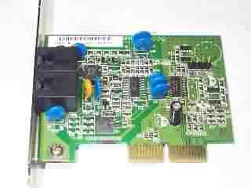

|
|
| 当前位置：电脑报电子版 > 1999 年 > 39 期 > 硬件周刊 > 磐英AMR Modem使用手记 |
| 《 磐英AMR Modem使用手记 》 |
| AMR就是Audio Modem Riser的缩写，它是AC97规范定义的规格，AMR结构是Audio和Modem结合的形式，可有效降低成本。目前Intel
810晶片组和VIA MVP4及Apollo Pro Plus 133都支持此规格，由于不少主板已内置声卡功能，因而主板上的AMR插槽已逐步成为单纯的MR(Modem
Riser)槽了。最近笔者拿到磐英推出的AMR Modem，这块卡板面非常小巧，使用Smart Link的HAMR5600数据芯片，支持V.90通讯协议。 AMR Modem看起来技术有所创新，整体设计也不错，但实际使用的性能到底怎么样？这是笔者最关心的问题之一。笔者第一次使用钻石i810主板对磐英的这款AMR软猫进行了初步测试，测试结果让人大跌眼镜，除了连接速率较低之外，时不时的断线更令笔者头大。后来查询有关资料才知道，不同品牌的AMR软猫必须配合各自的主板才能发挥较好的效能。不过，既然是符合AC97规格的产品，哪有什么理由挑板子？代理商解释说，AMR软Modem设计还不完善，不像一般 Modem那样具有较好的兼容性。如磐英的软猫就是针对自己的主板设计的，所以用在其他主板上就会出现问题。 笔者仍是半信半疑，重新调整了测试的平台。在硬件平台采用磐英EP－6 VBA主板、赛扬366、华硕V3400TNT显示卡、昆腾火球八代8.4G硬盘，操作系统是Win98的第二版。测试前先把安装软盘的压缩文件拷贝到硬盘上并解压缩，然后进入主板的BIOS把“On Chip Audio”和“On Chip Modem” 选项设定为“Enable”（否则进入Win98后系统不能检测到软猫的存在）。进入系统后找到新硬件，按提示安装好AMR软猫。建立好拨号网络后，笔者马上进行拨号。此时系统资源显示10％被占用，连线速率是44000bps，速率和一般的Modem也差不多。接着开始软件下载测试，发现速度还算不错，平均可达3.85K。在广州视窗的TCcows下载，平均可达4.2K。以下是我八次拨号所测试的情况： 第1次：41333bps，广州视窗的TCcows下载平均为3.6K。 第2次：44000bps，在163个人主页下载数据峰值速率达7K，正常速率稳定在2.65K～2.8K，下载到1100K数据时断线。 第3次：41333bps， 从 www.linuxbeg.com 下载达到3.35k 第4次；44000bps，从本地较快网站下载，速度稳定为3.3K 第5次：44000bps，同上，下载稳定为3.5K 第6次：44000bps，到国外的网站下载，速度不太稳定，平均2.8K 第7次：44000bps，使用FTP下载，峰值可达8～8.5K，然后下降成4K左右，平均大约4.5K左右。 第8次：44000bps，使用FTP下载，成绩和第七次差不多。 笔者与以前的测试结果对比发现，磐英AMR软猫配合磐英主板的稳定性远比配合钻石或其他主板要好得多。从测试中的上线速率和下载平均速率来看，AMR软猫的性能处于一般Modem的中等水平。 应该说AMR Modem仍属于较前卫的产品，同真正的Modem相比没有太大的功能上的差异，只是在资源占用上有些缺憾。尽管如此，笔者仍不建议购买此类产品，因为只为单纯的主板而设计，产品的实用性会大大下降。另外目前AMR的售价和内置的软Modem相比，性价比上没有什么优势。如果能够和整合性主板捆绑销售的话，还可以考虑使用。不过假以时日，AMR Modem的技术发展成熟，它将会是不错的选择。 （广州 黑仔强） |
| 下载本期推荐软件 | 页 首 |
| 《电脑报》版权所有，电脑报网站编辑部设计制作发布 |